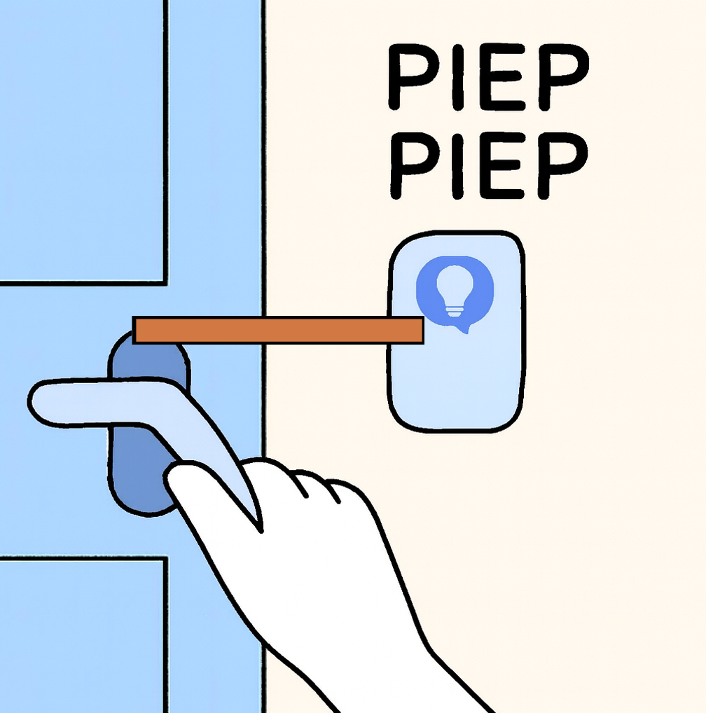

Hoofdstuk 3

Stap 3: zet de sensor aan. Indien het apparaat en het geleidende materiaal correct zijn geplaatst, zal de sensor afgaan.
Stap 3: zet de sensor aan. Indien het apparaat en het geleidende materiaal correct zijn geplaatst, zal de sensor afgaan.